[03.01.2026]
Stuck pixels.
If you stand quiet enough and look hard enough, you’ll notice the stuck pixels. I feel them everywhere I go. They’re in the shadows of tree leaves and between my wandering toes. I see them on the park bench and at the bottom of my teacup. We form a union, and it makes me feel so much better.
ㅤ
ㅤ Stuck pixels don’t participate with the rest of the image. Their appearance is miscellaneous; some are fortunate to be clustered on the map, while others are in deep space. These artifacts remind me of confetti: falling round every aspect of the human experience. Sometimes it’s overstimulating, so we drink black coffee.
ㅤ
ㅤ Stuck pixels don’t participate with the rest of the image. Their appearance is miscellaneous; some are fortunate to be clustered on the map, while others are in deep space. These artifacts remind me of confetti: falling round every aspect of the human experience. Sometimes it’s overstimulating, so we drink black coffee.
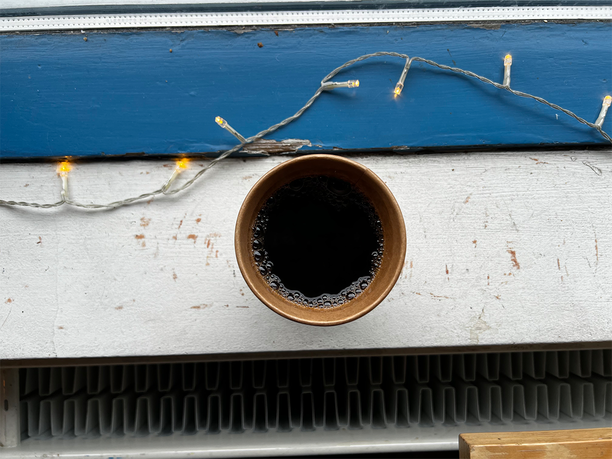
Are we the cafés we frequent?
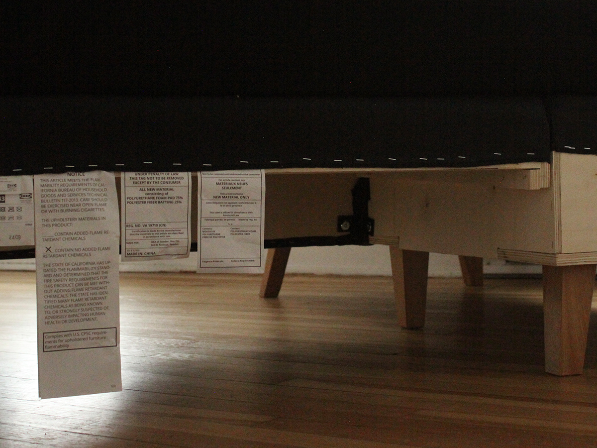
the objects in our rooms?
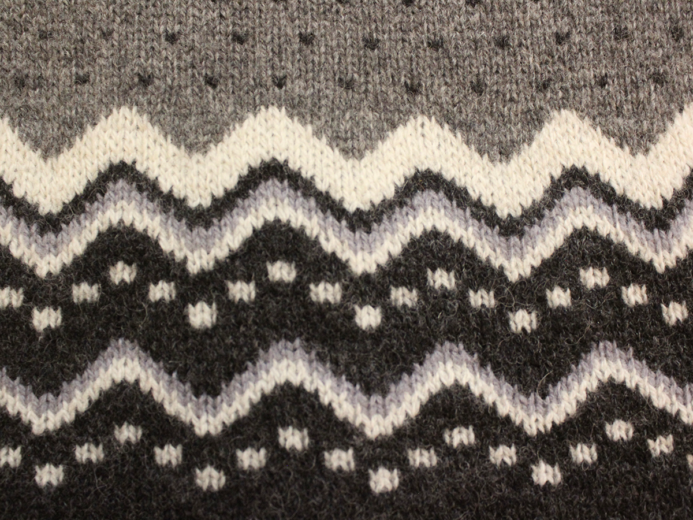
the patterns we knit?
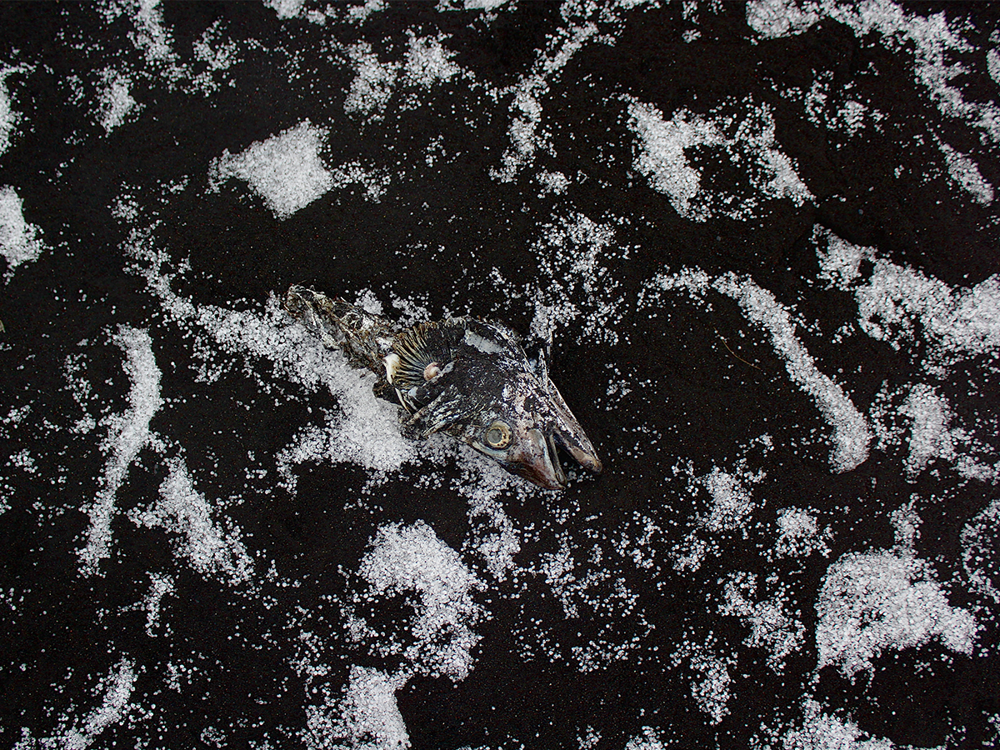
the substances we abuse?
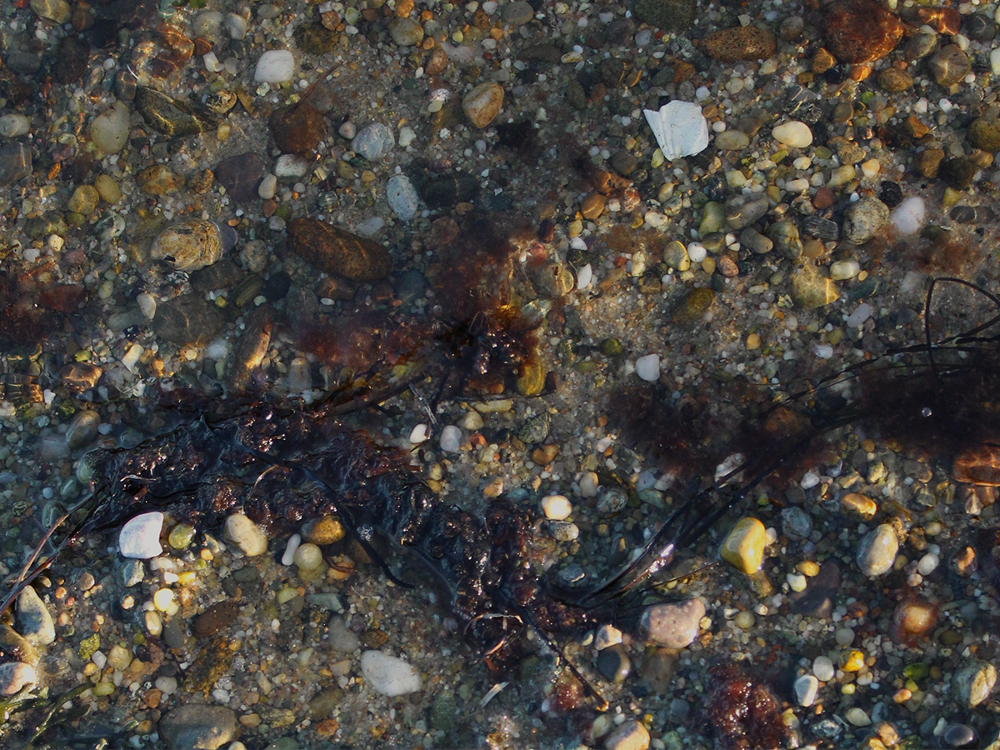
the lucky rocks in our pockets?
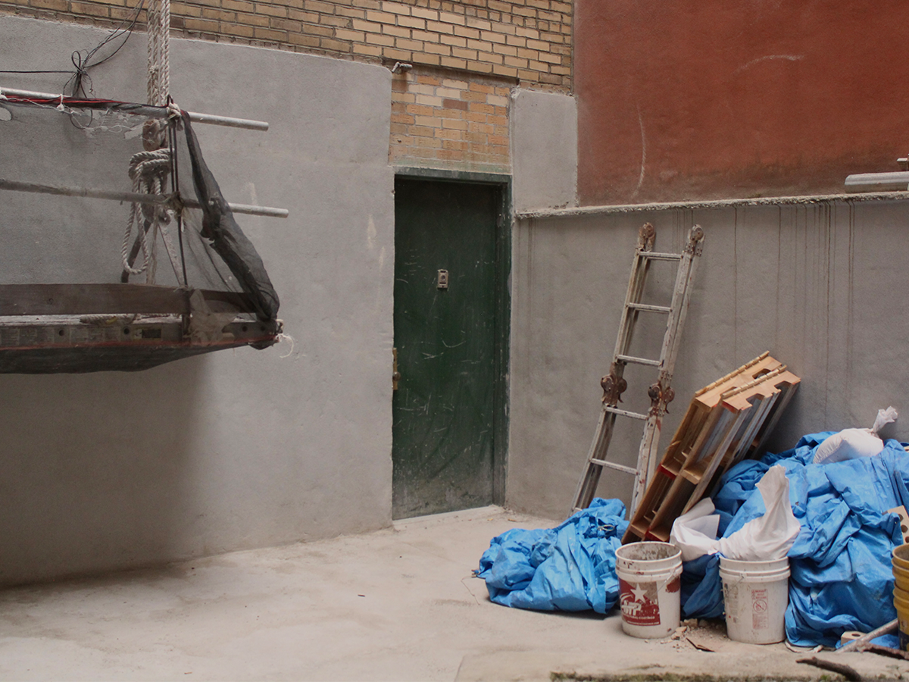
the places we hide?
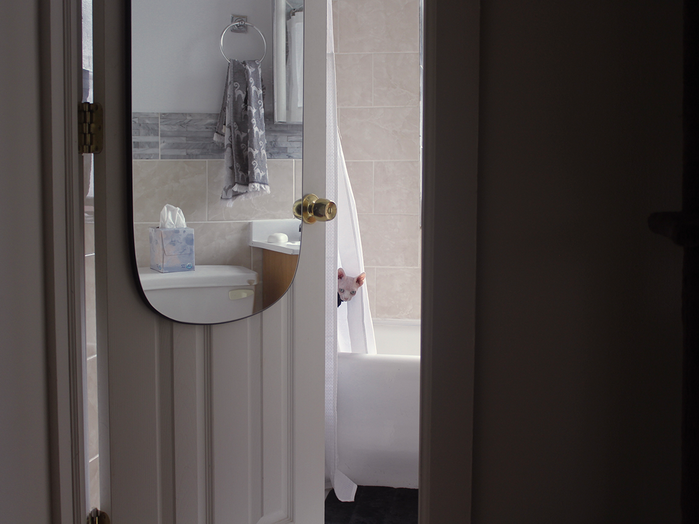
the looks we recive?
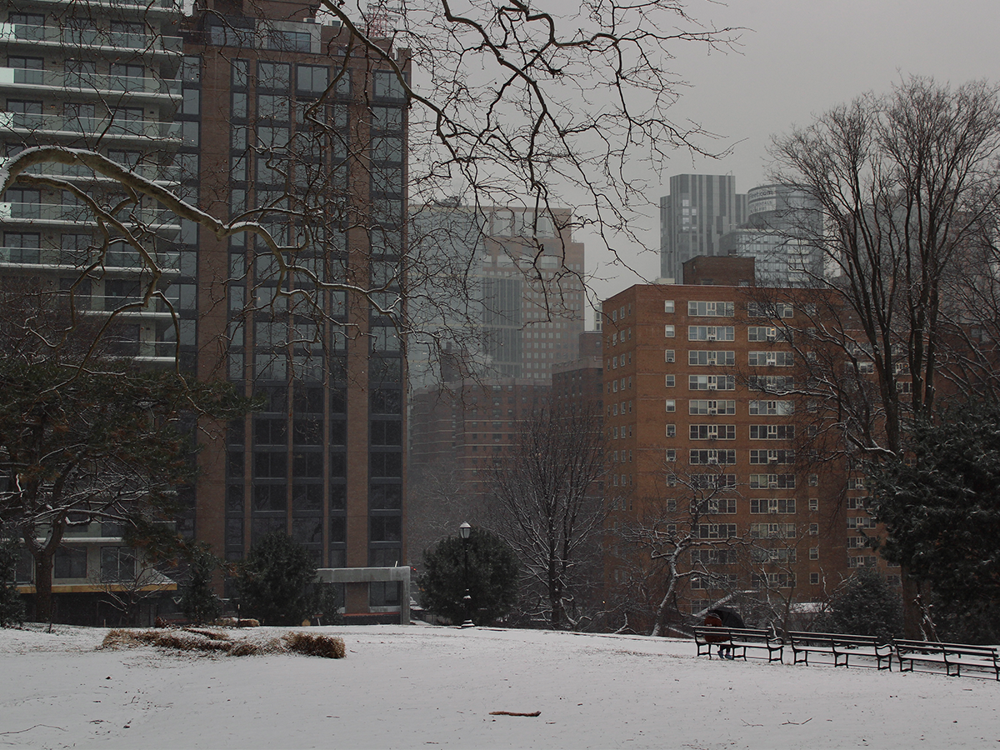
the moments we're apart?
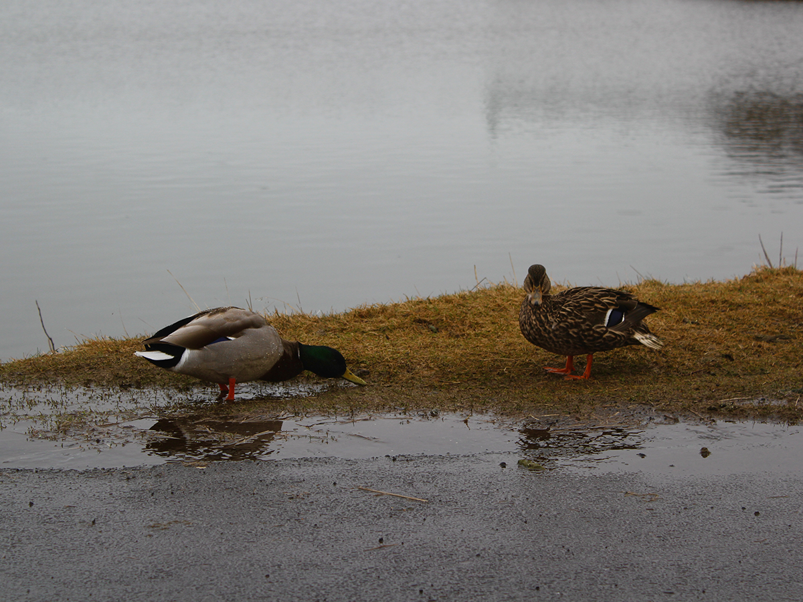
the people we please?
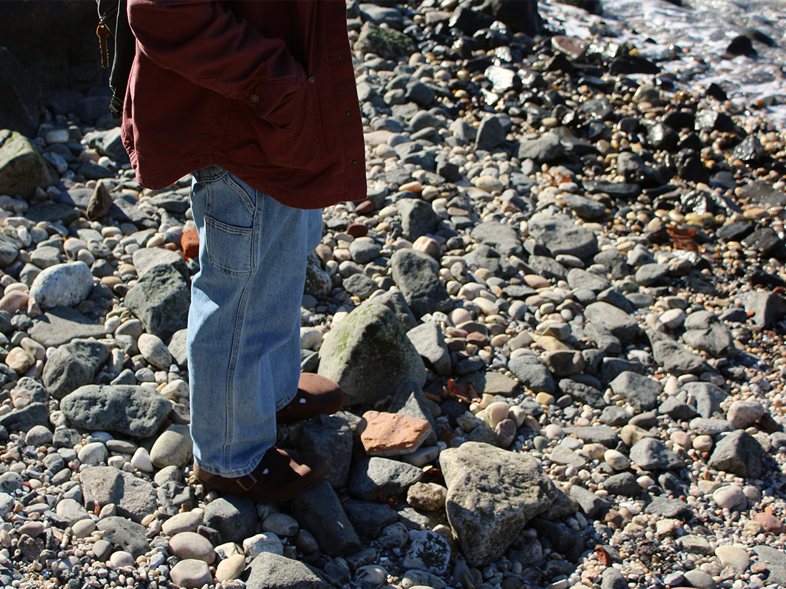
the people we love?
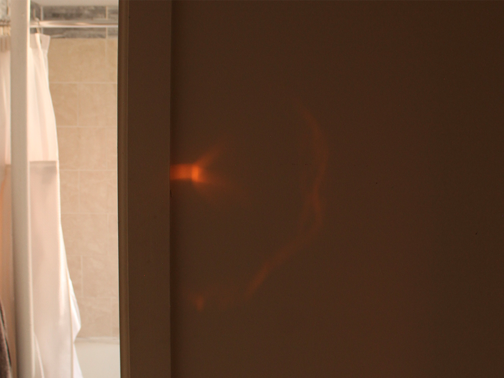
Or are we: